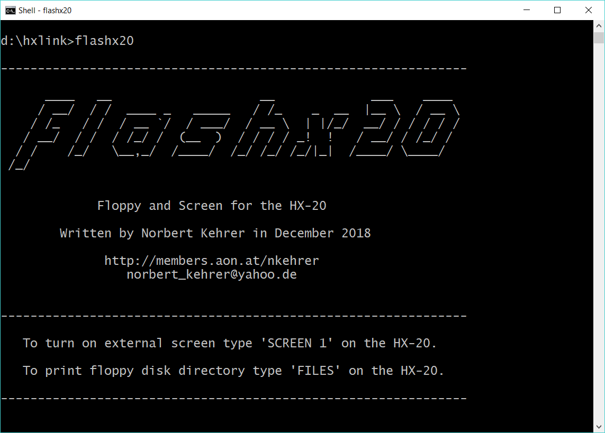
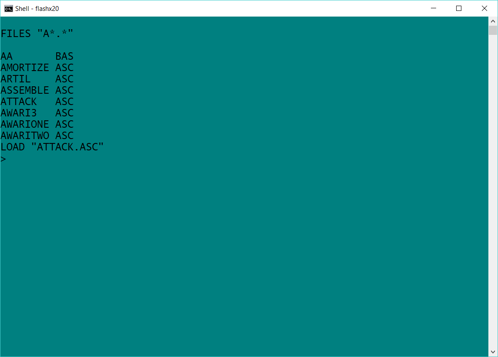
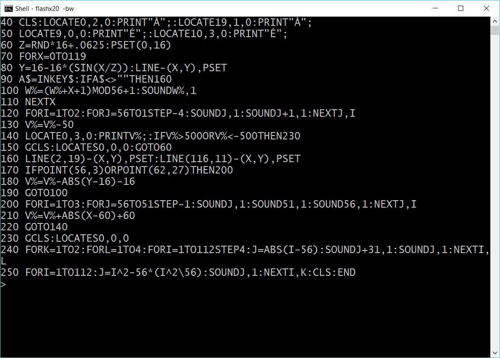
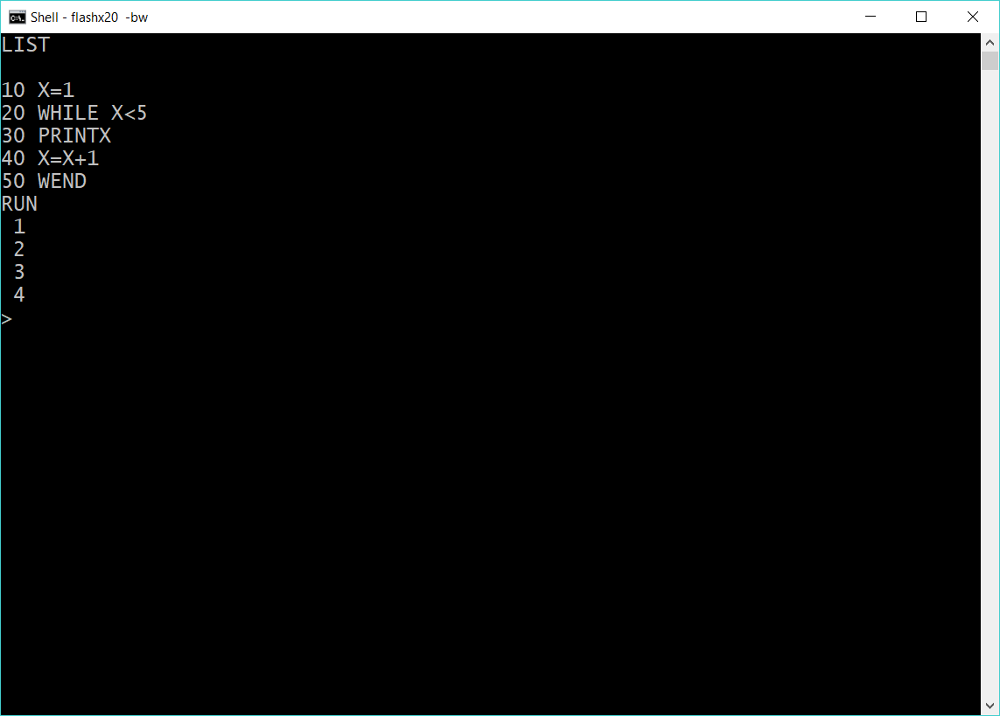
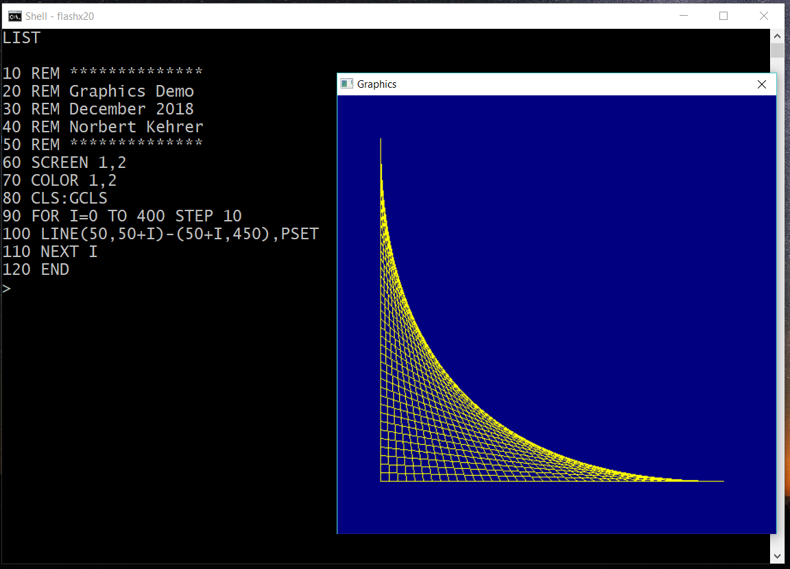
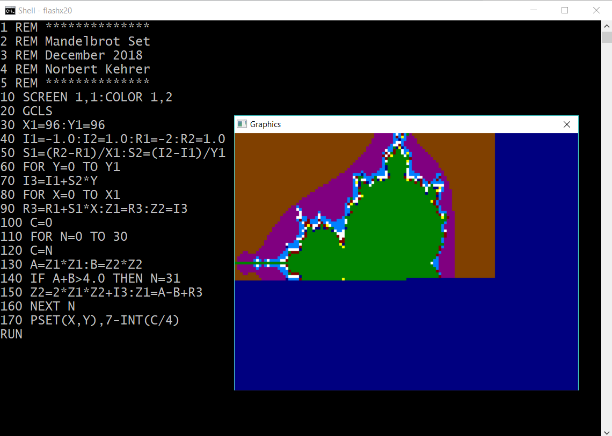

flashx20 — Floppy and Screen for the Epson HX-20
With the "flashx20" program a normal Windows PC or notebook computer can be connected to an Epson HX-20 handheld computer,
where the PC simulates the following peripheral devices for the HX-20:
-
an external display controller with graphics
-
two external dual floppy disk drives
The HX-20 has a small built-in LCD screen supporting a resolution of 4 x 20 characters in text mode or 32 x 120 pixels
in graphics mode. The small display makes it cumbersome to edit large BASIC programs or text. Therefore, Epson provided
the possibility to connect the HX-20 with an external display controller via its serial port. Through a specific protocol
the handheld communicates with the controller telling it what to show on the connected external monitor. In flashx20 this
controller is emulated in software. Like a display controller, it interprets the commands from the HX-20 and displays the
corresponding text or graphics on the screen of the PC.
Over the same protocol, it is possible to connect up to four floppy disk drives to the serial port of the Epson HX-20. There was
e.g. Epson's dual disk drive called TF-20, which supported loading and saving of programs and data on floppy disks. When
the TF-20 was connected during the boot-up of the HX-20, a special BASIC extension called "Disk BASIC" was loaded into
the HX-20, and provided additional commands to work with floppy disks, e.g. the command "FILES" to display the disk directory.
Like in the real drives, he flashx20 program on the PC interprets the Epson serial protocol and stores and loads programs and
data from the HX-20 on the PC's hard disk.
I made a zip file containing my "flashx20" program for Windows computers, some BASIC examples to load via the PC, and a
PDF user manual. You can download it here:
Here are some example screenshots:





